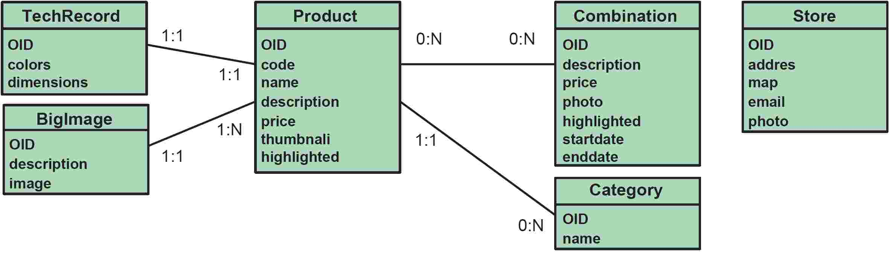
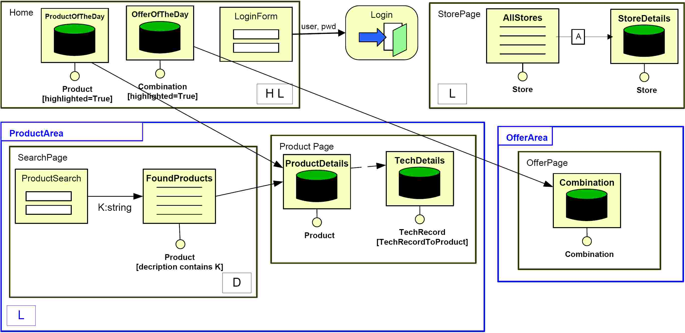
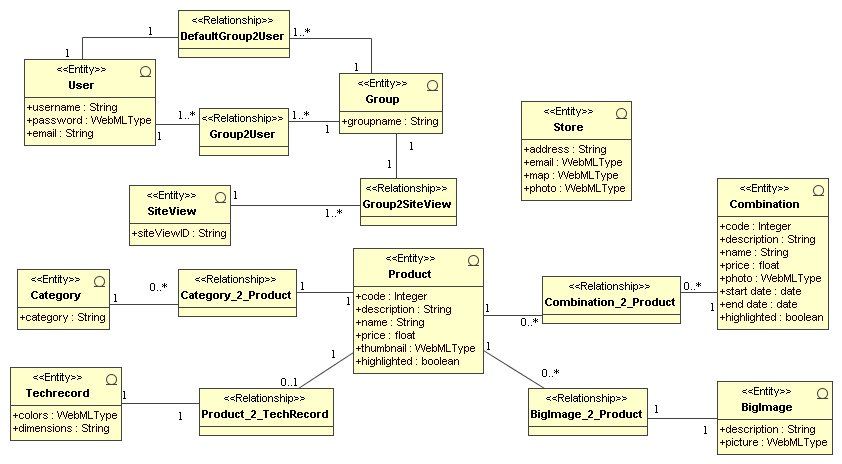

This example is about a web application that implements the product catalogue and content management system of a business shop.
The catalogue is a Web application offered to the general public that advertises various types of furniture, e.g., chairs, tables, lamps, and so on, and also special combinations of items sold at a discounted price. Individual items are described by an image, a textual description, their price, a set of technical features (dimensions, available colours, etc.), and larger images. Combinations are illustrated by a photograph, advertising text, and the discounted price.
Information about the store locations is also made available, including the address and contact information, an image of the store, and a map. Users are expected to visit the catalogue home page containing the offer and the product of the day. From there, they can access the details of the advertised product and offer, or enter dedicated areas for navigating the catalogue, using various search and browsing facilities.
From the page describing a combination, the individual items forming the combination can be accessed, and conversely, it is possible to navigate from an item to the combinations including it. From the home page, the list of stores can also be reached.
The employees of the company can login from the home page into a protected Web application, which enables managing the content of all the objects displayed in the public site.
WebML [CFB02] describes Web applications at three levels: the content objects, the front-end organization, and the look&feel. Content objects are specified using a simplified Entity-Relationship data model (or, equivalently, a simplified UML class diagram), comprising classes, entities, attributes, single inheritance, binary relationships, and data derivation expressions. Figure 1 shows the data model of the running case, with the objects mentioned in the requirements.

The front-end is specified using the hypertext model, which has a hierarchical organization: each application corresponds to a site view, internally structured into areas, which in turn may contain sub-areas and pages. Multiple site views can be associated to the same data model, e.g., to represent applications delivered to different actors or designed for different access devices (Web, Digital Television, mobile phones, PDAs). Site views, areas and pages are not only units of modularization, but also govern access, which can be selectively granted to each individual module based on the user's identity and subscription to groups. A first kind of navigation, which does not depend on page content, can be expressed over site views, areas and pages: if a page or area is marked as "landmark" (L), it is assumed to be reachable (through suitable navigation commands) from all the other areas and pages in the same module; if a page or area is marked as "default" (D), it is assumed to be displayed by default when the enclosing module is accessed; if a page is marked as "home" (H), it is displayed by default when accessing the application. Figure 2shows the hypertext model of the public site view of the running case, with the areas and pages mentioned in the requirements, annotated with the navigation markers.

In Figure 2, the home page contains two data-driven content units (for displaying the product and offer of the day) and one static content unit (an entry form); the entry form is connected to a login operation (placed outside the home page), for authenticating the employees before accessing the protected content management site view. The outgoing link of the entry unit shows the parameters transferred to the login operation units.
In [MFV07] the authors show how the previous WebML models can be represented in UML, using the UML 2.0 Profile for WebML they define.
For example, the folowing figure shows the UML representation (using the UML profile for WebML) of the data model of the running example (equivalent to the WebML model shown in Figure 1).

Analogously, the rest of the UML models for this application are shown in [MFV07].
The definition of an UML 2.0 Profile equivalent to WebML demonstrates practically the suitability of UML for encoding the requirements and generating the complete code of complex real-world Web applications. However, several issues were encountered in representing WebML with UML 2.0, both of general nature and specific to the encoding of WebML.
Expressive power. The UML Profile for WebML provides the same expressiveness as the native representation: all WebML concepts were mapped into the corresponding UML (stereotyped) elements and the resulting UML profile proved sufficient to describe complete Web applications that could be successfully processed by the WebRatio model checking and code generation engine. This result, which was not achieved in the previous attempts at encoding WebML in UML 1.X, has been granted by the new features of UML 2.0. For example, ports and connectors as defined in UML 2.0 have provided the necessary expressive power to represent the interconnection of components and the associated flow of parameters, which is essential to hypertext specification. Furthermore, OCL invariants, involving ports, realization and view classes, can express the semantics of data-centric Web components in quite a natural and compact way. The notion of connector proved sufficient for expressing the linking of Web components, where parameters are simply transferred from one component to the other.
Complexity. Only a limited number of UML concepts proved necessary to model and implement a WebML application. UML seems to contain far more concepts and mechanisms than needed for Web modeling. The main advantage of the UML profiling mechanism has not been found in the extension of the UML metamodel (which is already too large and complex to be used in full), but in the possibility of "restricting" the set of UML elements that are relevant to a given domain, tailoring their semantics so as to capture the behavior and well-formedness rules of the domain-specific concepts they represent. In this respect, the complexity of UML is greatly alleviated by the use of a well-designed profile.
Required skills. Using UML properly requires deep knowledge of specialized concepts (e.g., ports, connectors, structured classes, collaborations, etc.). These concepts are mostly alien to the Web engineer, who thinks in terms of Web-specific entities (Web pages, links, forms, etc.). The use of stereotypes, possibly represented with icons that exploit visual objects familiar to the domain expert, lowers the skill-level necessary to make practical use of UML in implementing Web applications, because it helps bridging the gap between the domain concepts and the UML constructs and mechanisms.
Behavior modeling. Representing behavior in UML, and generally in MDD, is much more complex than representing structure. UML structural diagrams have a clear semantics and can be easily customized to fit most domains. At present, UML dynamic models (collaboration, sequence, and activity) are more frequently used as a documentation for the human reader than as a specification usable for code generation. Other models (statecharts) are more formal and naturally suited for code generation, but are hard to master for practitioners. There is a current lack of a concrete syntax for actions in UML, which hinders the specification of executable code. The progress of tools in the field of executable UML and action semantics (e.g., xUML by Mellor et al.) may change this situation, by allowing the direct execution or compilation into code of arbitrarily sophisticated behavioral models. This approach, which demonstrated effective in such application domains like real-time embedded systems, is still be proven in the Web domain, where the interplay of dynamic behavior with user interfaces and business logics is more intricate.
In this sense, the approach taken by WebML of not representing explicitly the behavior of their elements has proved its benefits, exploiting the domain-specific meaning of business components without loss of expressive power. For instance, all the data-centric content and operation units have a well-defined behavior: they are just the basic CRUD (Content Read, Update, Delete) operations familiar to any data designer, and thus it would make no sense representing their behavior in a high-level diagram; their transformation into platform-dependent code can be easily delegated to a tool. The same is true for user-defined components: their semantics is known to the developer and need not be expressed when specifying their usage in a hypertext model. They can be modeled and coded elsewhere and treated as a plugin in the Web design model.
Usability. WebML native representation is far more compact than its UML counterpart. This is obviously unavoidable, when comparing a general purpose language like UML and a DSL that has been refined for years in search of compactness and notational economy. However, the disproportion shows that there is ample room for making UML more concise. One of the areas of possible improvement is in the cross-references between models. One aspect in which UML 2.0 proved rather cumbersome is the specification of the internal realization of set-oriented content units (e.g., index units). Here, three classes (the component realization class, its focus class, and a data view class) were necessary to express the trivial concept of "select-project" view (a subset of the objects of a class, possibly with a restricted set of attributes). Clever mechanisms for abbreviating the expression of view relationships between classifiers in different models could dramatically reduce the complexity of diagrams. Another area where usage proves rather cumbersome in the specification of parametric conditions, a fundamental issue in component-based applications. Suitable abbreviations and a better scope mechanism for OCL variables within structured classifiers could greatly simplify the task. Finally, it might be possible that other UML representations of WebML are possible, different from the ones proposed in [MFV06] which are much more usable. The quest for these other representations is an open line of research.
This version of the Catalogue example was originally described in [].
A similar application of the Catalogue example is the "CD-Data store system", an application also used by Moreno, Fraternalli and Vallecillo [MFV06] to illustrate their UML 2.0 profile for WebML.
[CFB02] S. Ceri, P. Fraternali, M. Brambilla, A. Bongio, S. Comai, and M. Matera. "Designing Data-Intensive Web Applications". Morgan Kaufmann, 2002.
[MFV06] N. Moreno, P. Fraternalli, A. Vallecillo, "A UML 2.0 Profile for WebML Modelling", in Proc. of the 2nd Model-Driven Web Engineering Workshop, MDWE 2006, Palo Alto, California (2006).
[MFV07] N. Moreno, P. Fraternalli, A. Vallecillo, "WebML Modelling in UML", submitted for publication, 2007.